Help for the busy parts of family life.
100 plain guides, plus free tools and ready-made lists, for chores, meals, schedules, babies, school, the house and family life. Use them with any app, or on paper.
Make it, print it, copy it.
Chore list generator by age
Enter your kids' ages and get a starter chore list for each one.
Free printablesChore charts, planners and checklists
Fill in names and jobs on screen, then print or save a PDF.
Free templatesRoutines and checklists to copy
Morning, after-school and bedtime routines, packing lists, party and holiday checklists.
Find the one you need.
Showing all 100 guides
Chores and kids 14
- RoutinesA 15-Minute Daily Tidy Routine for the Whole FamilyA short daily tidy routine with a timer, clear zones and a role for every person, so the house resets each evening without a long cleaning session.
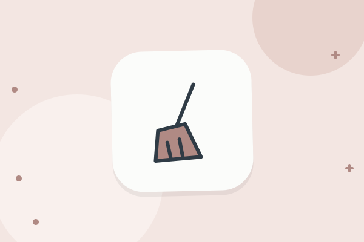
RoutinesA Weekly Cleaning Schedule for Busy FamiliesA weekly cleaning schedule built around one small task per day, with a sample week, a weekend reset and tips for lowering the bar when life gets busy.- How-toAllowance and Chores: Should They Be Linked?Three common ways families handle allowance and chores, the case for and against linking them, and how to pick a setup and explain it to your kids.
- RoutinesAn After-Dinner Cleanup Routine Everyone Can FollowA clear after-dinner cleanup routine with a role for every family member, a 20-minute order of work, and ideas for rotating jobs so no one gets stuck.
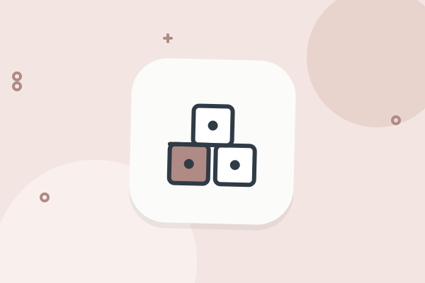
How-toChore Ideas for Toddlers and PreschoolersSimple chore ideas for toddlers and preschoolers, how to teach each job in small steps, and how to keep helping short, calm and routine.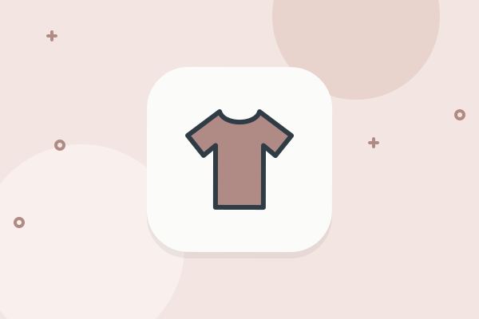
How-toChores for Teenagers: What to Expect and How to AskWhat chores teenagers can reasonably handle, how to ask in a way that gets results, and how to agree on deadlines and handle pushback calmly.- SystemsDecluttering With Kids: Toys, Clothes and PaperHow to declutter toys, clothes and paper with children involved: set limits, let kids make choices, use a one-in-one-out rule and keep the system going.
- How-toHow to Get Kids to Do Chores Without NaggingPractical ways to cut down on reminders: agree on the list once, tie chores to daily cues, use a visible chart, and follow through calmly.
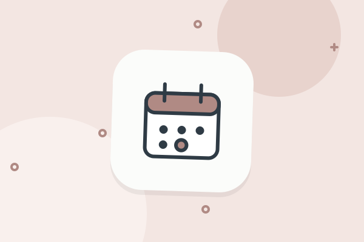
RoutinesHow to Set Up a Family Chore Rotation That WorksBuild a fair family chore rotation in four steps, with a sample four-week schedule, rules for swaps and sick days, and a simple monthly review.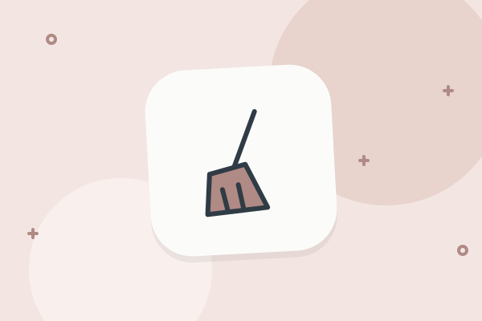
SystemsHow to split chores fairly in a familyFive ways to divide the work and what to do when it still feels uneven.- SystemsKeeping Up With Chores When Both Parents WorkHow two working parents can share household work: count the real hours, trim the list, split by schedule, batch tasks and keep a shared view.
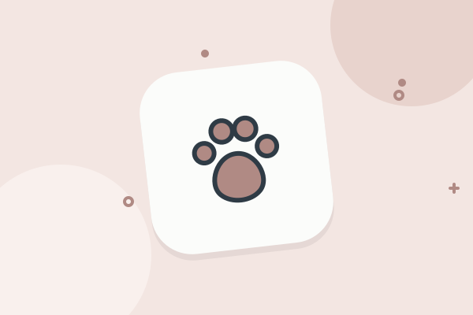
SystemsPet Care Chores for Kids, by Age and AbilityWhich pet care jobs kids can take on at different ages, how to teach them, how to supervise, and how to plan for the days a child forgets.- How-toReward Systems for Kids That Hold Up Over TimeHow to set up a reward system for kids with clear goals, small rewards and a plan for phasing it out, plus common ways reward charts fall apart.
- How-toTeaching Kids to Do Their Own Laundry, Step by StepA step-by-step plan for teaching kids to do laundry, with rough ages for each skill, a teaching order, a weekly schedule and ways to handle mistakes.
Meals and groceries 14
- PlanningA Plan for Leftovers That People Will Actually EatTurn leftovers into planned meals with a leftover night, remake ideas and simple labels, so less food gets thrown out and weeknight dinners get easier.
- SystemsA School Lunch Packing System That Saves MorningsSet up a school lunch system with a simple formula, a prep station, a weekly rhythm and ways to get kids to pack their own lunches.
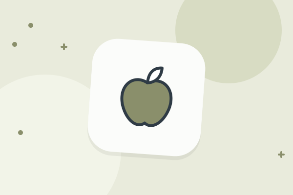
How-toCooking With Kids: Jobs by Age and Safety BasicsA practical list of kitchen jobs for toddlers through teenagers, with safety habits, a sample session and tips for keeping cooking with kids calm and fun.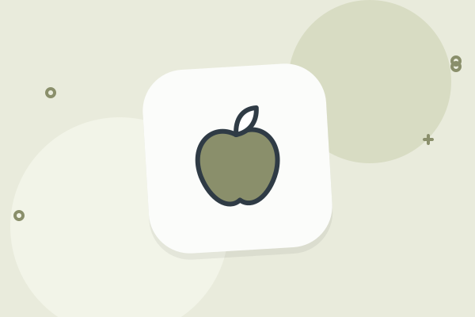
How-toCutting Food Waste at Home: A Family GuideSimple habits to waste less food at home: plan before you shop, store food well, use older items first, freeze early and keep kids involved in the routine.- PlanningCutting the Family Grocery Bill Without Cutting MealsPractical ways to lower a family grocery bill: set a weekly number, shop from a list, check what you own, compare unit prices and waste less food.
- How-toDinner Strategies for Picky Eaters at HomeCalm, practical dinner strategies for picky eaters, including deconstructed meals, safe foods on the table, small exposures and ways to lower the pressure.
- RoutinesEasy Breakfast Routines for School MorningsBuild a breakfast routine for school mornings with a rotation of quick meals, a night-before setup, kid jobs and a plan for days when time runs short.
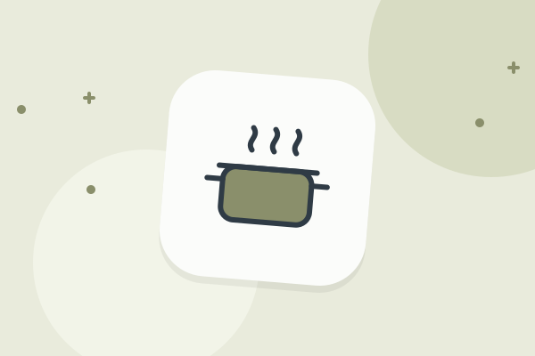
PlanningFreezer Meals for Busy Weeks: How to StartA practical guide to freezer meals for families: what freezes well, how to batch cook, how to label and thaw, and a simple plan for your first session.- PlanningHow to Plan a Week of Dinners in 20 MinutesA short method for planning seven dinners at once, with a sample week, a grocery list routine and ways to keep the plan flexible when the week changes.
- SystemsHow to run a shared grocery list that worksStore-order sorting, a staples starter list and rules that stop duplicates.
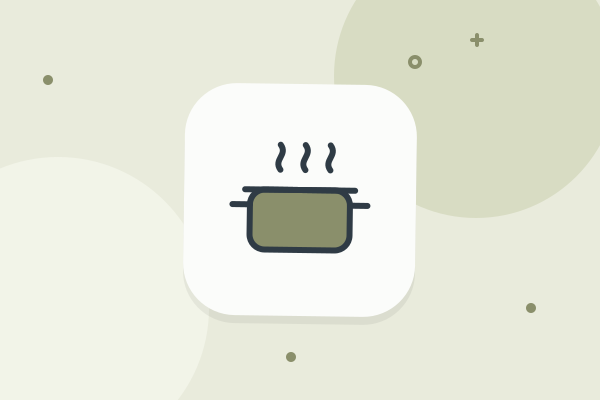
PlanningMeal Prep for Busy Families: A Practical GuideLearn how to set up a two-hour meal prep session that fits family life, with a prep-day schedule, container tips and ideas for meals that keep well.- ChecklistsPantry Staples Every Family Kitchen NeedsA practical checklist of pantry, fridge and freezer staples for families, with advice on what to stock, how to organize it and when to restock.
- SystemsSetting Up a Kids' Snack Station at HomeSet up a kids snack station with a layout, sample items, house rules and a restock routine, so snacks stay organized and do not replace dinner.
- PlanningTheme Night Dinners to Make Planning EasierUse weekly theme nights to cut down dinner decisions. Includes a sample week, ideas for each theme, tips for flexibility and ways to get kids involved.
Routines and schedules 14
- PlanningA Monthly Family Planning Session: Agenda and ChecklistOnce a month, look ahead at dates, money, school, travel and home tasks. This guide gives a 45-minute agenda, a checklist and tips for couples.
- RoutinesAn After-School Routine That Works for Real FamiliesSet up an after-school routine with a snack, a reset, homework or play, and a plan for activity days. Includes a sample schedule and tips for working parents.
- RoutinesHow to Build a Bedtime Routine That LastsBuild a calm, repeatable bedtime routine for kids, with a sample 30-minute sequence, ways to handle stalling and tips for sharing the work.
- RoutinesHow to Build a Morning Routine for Kids That WorksA practical guide to building a kids morning routine around a fixed leave time, with steps by age, night-before prep and a plan for bad mornings.
- RoutinesHow to Build a Summer Schedule for Your KidsPlan the summer break with a weekly rhythm, camps and childcare dates, a sample day, chores, reading time and a plan for the weeks when nothing is booked.
- SystemsHow to Color-Code a Family Calendar So It Stays ReadableLearn simple rules for color-coding a family calendar by person, with tips on how many colors to use and how to handle shared events.
- SystemsHow to Organize a Carpool With Other FamiliesSet up a carpool that lasts: who to ask, how to write the rules, a sample rotation, safety and insurance checks, and what to do when a driver cancels.
- PlanningHow to Plan Weekends With Kids Without Overdoing ItA simple way to plan family weekends: one anchor outing a day, a short chore block, real downtime and a Thursday check before the weekend starts.
- SystemsHow to Run a Weekly Family Meeting That People AttendA short weekly family meeting gives everyone a say and keeps the week on track. Learn the agenda, timing, ground rules and how to include young kids.
- RoutinesHow to Set a Family Screen Time ScheduleBuild a family screen time schedule with clear zones, time limits by age range, a sample weekly plan and ways to enforce it without constant arguments.
- SystemsHow to set up a family calendar everyone usesWhat goes on it, who adds what and how to name a driver for every ride.
- SystemsHow to Set Up a Family Command Center at HomeBuild a family command center in one hour: where to put it, what goes on it, a shopping list, how to keep it current and a digital version for the phone.
- SystemsManaging Activities for Several Kids at OncePractical ways to schedule practices, lessons and games for more than one child, from one shared calendar to a gear plan, a driver plan and a simple limit.
- How-toWhen the Family Calendar Is Too Full: How to Cut BackSpot the signs of an overbooked family, audit your week, decide what to drop using clear questions and say no kindly. Includes a sample audit and scripts.
Babies and toddlers 14
- ChecklistsA Room-by-Room Babyproofing Checklist for Your HomeWalk through your home room by room with this babyproofing checklist, plus a simple order of work and tips for keeping it up as your baby grows.
- ChecklistsBaby Gear Checklist for the First Year, Stage by StageA plain checklist of baby gear for the first year, split into stages, with notes on what to buy early, what to wait on and what to borrow.
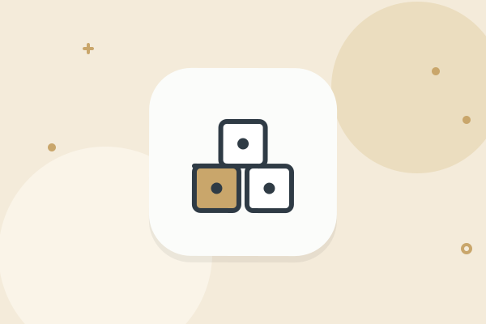
RoutinesDaily Routines for Toddlers: A Flexible FrameworkHow to build a daily toddler routine around anchor points like meals, naps and bedtime, with sample schedules and tips for handling days that fall apart.- ChecklistsDiaper Bag Checklist: What to Pack and How to RestockA diaper bag checklist for babies and toddlers, with a restock routine, tips for different outing lengths, and a quick list to keep in the car.
- SystemsFinding Daycare and Keeping Up With the PaperworkHow to search for daycare, what to ask on a tour, and how to keep enrollment forms, deadlines and payments in order once your child starts.
- PlanningGoing Back to Work After a Baby: A Logistics PlanA practical plan for the return to work after a baby, covering childcare, pickup duty, a trial run, and how two parents can divide the new load.
- ChecklistsHospital Bag Checklist for Parents: What to Pack and WhenA practical hospital bag checklist for both parents, with a packing timeline, a list of paperwork to bring, and what to leave at home.
- SystemsHow to Keep a Baby Log Without Burning OutPractical tips for tracking feeds, sleep and diapers in the early months, deciding what to write down, and knowing when it is fine to stop.
- SystemsKeeping Baby Checkup and Vaccine Records StraightA simple system for storing baby checkup notes, vaccine records and upcoming appointment dates, so you can answer any question from the doctor or daycare.
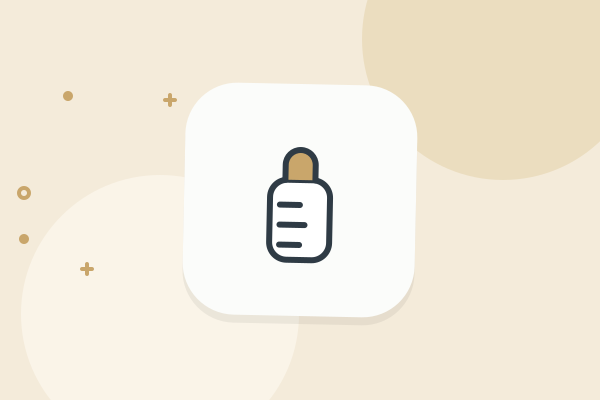
How-toLeaving Your Baby With a Sitter for the First TimeHow to prepare for the first time you leave your baby with a sitter, including a handoff sheet, a short trial outing, and what to say before you go.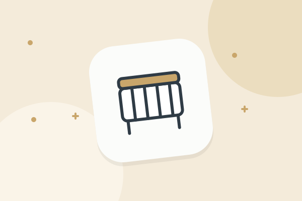
SystemsOrganizing family life with a new babyA shared log, a plan for nights and a ready answer for visitors.- SystemsOrganizing Potty Training: Supplies, Schedule and NotesGet ready for potty training with a supply list, a simple schedule, a shared note system for caregivers, and a plan for outings and daycare.
- RoutinesSharing Night Duty With Your Partner: A Practical PlanA practical way for two parents to split night duty with a baby, covering shifts, handoff notes, protected sleep and how to adjust when plans fail.
- ChecklistsTraveling With a Baby: A Planning ChecklistA step-by-step planning checklist for traveling with a baby, covering timing, documents, packing, the trip itself and a few ways to keep the days flexible.
School and teens 14
- SystemsA High School Planning Calendar for FamiliesA year-by-year planning guide for high school families covering courses, testing, activities, work and college or career research, with tips for dates.
- SystemsA System for School Paperwork That Takes Minutes a DayA simple plan for handling permission slips, flyers, report cards and artwork so nothing gets lost and the kitchen counter stays clear.
- RoutinesFixing the School Morning Rush for Good, Step by StepA step-by-step plan for calmer school mornings, with a sample timeline, a night-before checklist and ideas for the usual trouble spots.
- SystemsHelping Kids Keep Their Own Calendar, Step by StepHow to teach children to use a calendar for school, activities and chores, with ideas for each age, a weekly check-in and tips for letting go.
- How-toHow to Agree on Schedules and Curfews With Your TeenA practical guide to setting curfews, check-ins and weekly schedules with a teenager, including a sample agreement and ways to handle disagreements.
- PlanningHow to Decide Which Activities to Say Yes ToA calm way to choose between sports, music, clubs and lessons for your kids, with a simple checklist, a question list and a one-in, one-out rule.
- PlanningHow to Prepare for a Parent-Teacher ConferenceA short checklist for getting ready for a parent-teacher conference, with questions to ask, how to involve your child and how to follow up afterward.
- RoutinesHow to Set Up a Homework Routine That Holds UpA plain guide to choosing a homework time, setting up one work spot, agreeing on rules and handling the nights when it all falls apart.
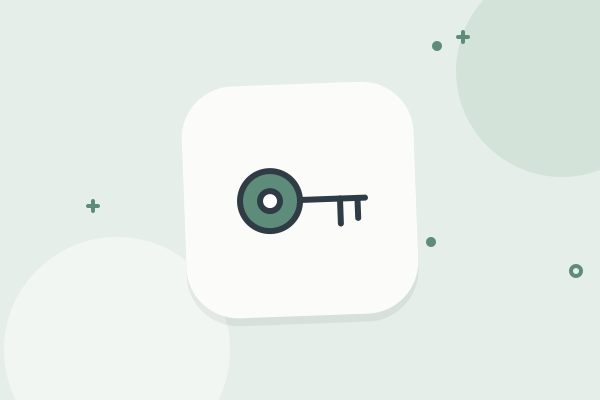
How-toPlanning Rides and Driving Agreements With a New Teen DriverHow to plan car use, rides, costs and house rules when a teen starts driving, with a sample agreement. Check official sources for licensing rules.- PlanningSchool and sports season planningSchedules, forms, gear, rides and routines for the start of any season.
- SystemsSetting Up a Backpack and Gear Station by the DoorHow to build a simple drop zone for backpacks, shoes, coats and sports gear, with a supply list, a weekly reset and tips for making kids use it.
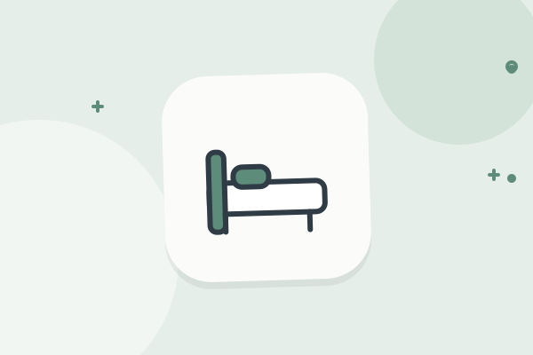
SystemsSleepover and Playdate Logistics for ParentsA practical checklist for hosting or sending a child to a sleepover or playdate, covering contact details, allergies, pickup times, rules and packing.- How-toTeaching Kids Time Management at Every AgePractical ways to help children understand time, plan their day and finish tasks, with age ranges, simple tools and sample wording for parents.
- How-toWriting a Family Phone Agreement Everyone Will FollowA step-by-step guide to writing a family phone agreement, with sample rules, age ranges, how to handle slip-ups and when to review the terms.
Home, bills and documents 13
- ChecklistsA Home Emergency Kit Checklist for Families With KidsA practical checklist for building a home emergency kit with kids in mind, plus where to store it, how often to refresh it and where to check official advice.
- RoutinesA Home Maintenance Schedule You Will Actually FollowBreak home upkeep into small monthly, seasonal and yearly jobs, with a sample schedule, a repair log and tips for sharing the work with your family.
- SystemsA Simple System for Household Bills That You Will Keep UpBuild a bill system with one master list, calendar due dates, careful autopay and a weekly ten-minute check, so nothing gets paid late or forgotten.
- SystemsHow to Audit Your Family's Subscriptions in One EveningFind every subscription charging your family, decide what stays, and set a yearly review so small monthly charges stop adding up without anyone noticing.
- PlanningHow to Make a Family Emergency Plan Everyone UnderstandsWrite down who to call, where to meet and what to do when plans change suddenly. A simple planning guide for families, with a one-page list and drill ideas.
- SystemsHow to Organize Important Family Documents at HomeA practical way to sort birth certificates, insurance papers, passports and school records into one findable place, with a short checklist and yearly review.
- SystemsHow to Organize the Family Medicine Cabinet SafelySort, label and store the family medicine cabinet with a simple routine for expiry checks, child safety and disposal. Planning tips only, no medical advice.
- SystemsHow to Tame Paper Clutter at Home With a Simple SystemStop paper piling up with an inbox, a weekly sort and four folders. Includes ways to handle kids' artwork, school notices and mail without a big project.
- SystemsHow to Track Passports and Travel Documents for the FamilyKeep passport expiry dates, visas and permission letters in view so you spot problems months ahead of a trip. Includes a simple checklist and timeline.
- SystemsKeeping Receipts and Warranties Where You Can Find ThemA simple system for receipts, manuals and warranties: what to keep, how to scan it, and how to find proof of purchase fast when something breaks.
- ChecklistsMoving House With Kids: A Timeline and ChecklistA week-by-week moving checklist for families with children, covering schools, paperwork, packing, moving day and the first week in the new home.
- ChecklistsSeasonal Home Checklists for Spring, Summer, Fall and WinterFour short checklists for the home, one per season, with jobs for kids and a note on adjusting them to your own climate and equipment.
- SystemsWhich Family Documents to Keep and for How LongA sorting guide for family papers: what to keep for good, what to hold for a few years, what to toss, and who to ask when you are unsure.
Family life 14
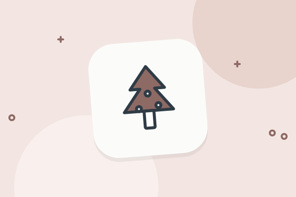
PlanningA Holiday Planning Calendar for FamiliesA month-by-month way to plan family holidays: decide on travel and hosting early, set a gift budget, spread out the tasks and leave room to rest.- RoutinesA Shared Pet Care Schedule for the Whole FamilyHow to share pet care fairly in a family: list the daily and weekly jobs, assign them by age, set up a simple schedule, and plan for vacations and vet visits.
- PlanningCoordinating Childcare With Grandparents: A Practical GuideHow to set up regular childcare help from grandparents: agree on days and expectations, share routines and house rules in writing, and keep everyone informed.
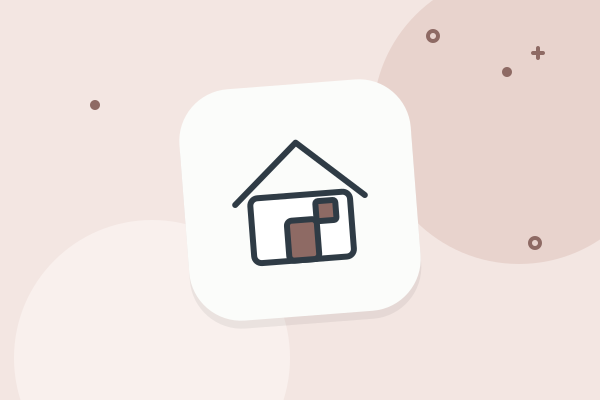
ChecklistsHosting Guests: A Checklist for FamiliesA practical checklist for hosting overnight guests when you have kids: prepare the room, plan meals, set expectations and keep your own routines intact.- PlanningHow to Find and Hire a Babysitter You Can TrustA calm, practical way to find a babysitter, what to ask in the interview, how to do a trial run, what to leave on the sitter sheet and how to agree on pay.
- PlanningHow to Plan a Family Vacation Step by StepA practical order of steps for planning a family vacation: dates, budget, booking, documents, packing and a loose daily plan that kids can handle.
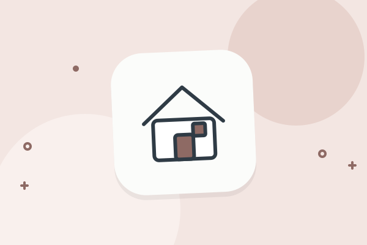
SystemsKeeping two households on the same pageHandoffs, shared facts and calendars when kids move between homes.- PlanningMaking Time for Date Night as Busy ParentsPractical ways to protect time as a couple: a regular slot, cheap and at-home options, childcare swaps and what to talk about when you finally sit down.
- How-toOrganizing a Blended Family: Calendars, Rules and ChoresHow to organize a blended family: a shared calendar, custody schedule, house rules, fair chores, one-on-one time and clear communication between households.
- ChecklistsPacking for Kids: A System That Works Every TripA reusable system for packing kids' bags for any trip: a master list, outfit math by length of stay, kids packing their own bags, and what to leave at home.
- PlanningPlanning a Kid's Birthday Party Without the StressA simple plan for a kid's birthday party: budget, guest list, time and place, invitations, food, games and a few tips for handling the day itself.
- PlanningRoad Trips With Kids: Planning and PackingHow to plan a road trip with kids: realistic driving times, stops, snacks, car activities, a car pack list and what to do when the mood in the back seat sours.
- How-toStarting Family Traditions That Fit Your ScheduleIdeas and a simple method for starting family traditions that are small and easy to keep, with examples for weekly, monthly, yearly and birthday habits.
- How-toStaying Connected With Long-Distance FamilyPractical ways for kids and faraway relatives to stay close: regular video calls, shared photos, mailed notes, visit planning and a time zone routine.
About HeyTribe 3
- How-toHeyTribe Free vs. PremiumWhere the Free limits are and what Premium adds.
- How-toHeyTribe vs. Cozi, Google Calendar and shared notesWhen each option is the better fit, including when it is not HeyTribe.
- How-toHow HeyTribe handles your family's informationPlain answers on what we store, who sees it and how to delete it.
No guides match those filters. Try a shorter word or clear a filter.
Notes from the fridge door.
Sharing the mental load without a spreadsheet
Simple habits to spread the remembering, planning and noticing.
Kids and choresA chore chart your kids will actually use
Small choices that keep a chore chart going past week two.
Weekly rhythmThe 15-minute Sunday reset
A short look at the week ahead so Monday starts with a plan.